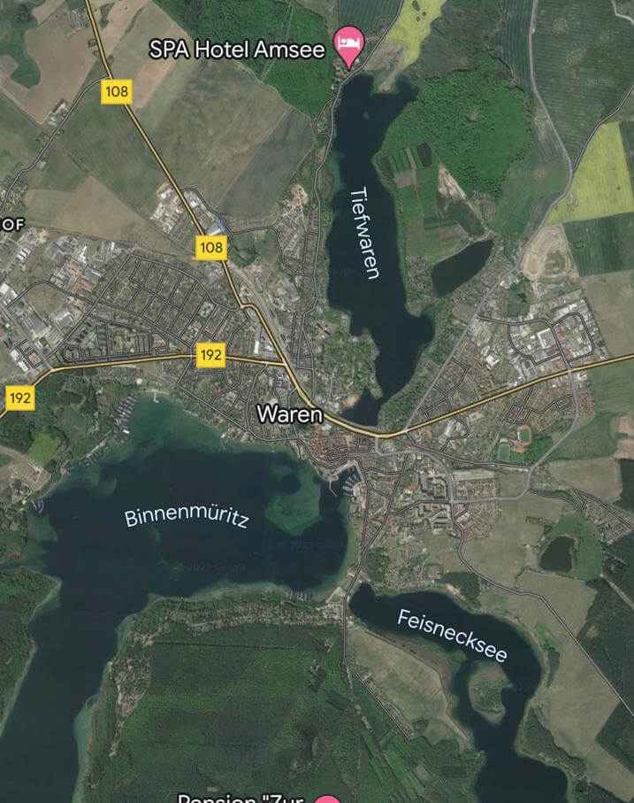

Radegast II - Radiger: Billinga king of Warini
Theory of proto Slavic origins of the Northern English
This article theorising proto-slavic settlement of Northern England at around 530 AD is a draft available here for peer review and public scrutiny.
Morris declares that in c530 the Varini tribe was to be found on the northern bank of the mouth of the Rhine. This was surely in preparation for the sea crossing, which was to further swell the Anglicisation of Britain. Lappenberg, quoting the 6th century Byzantine, Procopius, who died c562, states that ‘a King of the Angles in Britain, 534-547, had a sister who was betrothed to Radiger, King of the Varini’. If the ‘royal’ assertion of the Billingas is to be taken literally then Radiger is the first, and probably only, tribal Billinga whose name has come down to us by posterity.
Apparently Radiger had broken his promise to marry the niece of the Angle king and married instead his stepmother, a sister of Theudebert, the King of the Franks. The Angle King was much displeased to the extent that ‘the English Virgin herself crossed the sea with a vast armament conveyed in 400 ships’. This may give some indication of the size of the tribe (the Varini) that they expected to encounter. The battle that followed by the Rhine resulted in the Varini' s defeat and Radiger was captured, bound and brought before his scorned bride. She was Magnanimous in her treatment of Radiger, setting him free and treating him honourably - but he to marry her and return to Britain with her.
Whether Radiger end the Angle Queen lived happily ever after is not known. What is known, or at least may be conjectured, is that all or most of the Varini and Billinga folk were polarised in what is today the Netherlands, c540, and probably, shortly afterwards, followed Radiger to the shores of Britain. This tale tallies quite accurately with Wainwright's statement: ‘Angles had settled in Yorkshire considerably before the middle of the 6th century’. The Billingas, with the Varini, would have landed on Britain's eastern seaboard, in the area about the Wash. Lincolnshire and Norfolk are spattered with Billinga place-names: Billinghay, Billingborough and Bil(las)by in Lincolnshire and two Billingfords in Norfolk. These, though, are filial or second-generation place-names and probably do not indicate the original settlements. Evidence of 'pioneer' Billing place-names must once have existed but these villages would have been renamed by the Danes, whose 8th-10th century settlements in this
Billinge history society: Billinge of Billinge [1]
Location or Radogošč (the city) is lost since it was burned down in 1068.
Only the description is known from 2 sources. Now with the new knowledge looking at the map
and the town of Waren surrounded from 3 sides by lakes could match the description
(tricornis, tres in se continens portas)[2].
(Taking into account alluvial material accumulated over 1000 years.)
It is only 37 km west from the other top proposed location, the swamp area of the Lieps and Tollense lakes.

Map of Waren, Mecklenburg, Germany surrounded by lakes from 3 sides,
with centre built on thinner layer of alluvial soil between 3 lakes that in the past could have been one
large lake sheltering a wooden water castle of Rethra or Radogošč, presumed here to be home to
Billinga king of Warini - Radiger
Radiger, king of the Warini, appears 120 years later to my Radegast being killed near Rome and the "er" at the end of his name sounds a lot like "er" at the end of Billinger. Someone from Radogošč the city.
See part I on Radegast for more context.
I'll stretch it a bit and claim that Wigan sounds a lot like Waren and Wend.
My theory and analysis
Radiger is a different name from different variants of Radegast I came across so far, it doesn't match… it sounds related even suggesting blood relation. One could suspect “ger” being similar to German “gern” and that the name could well be a title rather than a name “welcome advice”. Although some Old English naming evidence suggests against this and that it would be an actual name. Another explanation for the "er" suffix is origin from a town.
See Aethelred the Unready, whose first name is very similar in nature and means “well advised”, REDE in the name again, now twice, with a moniker unread being an Old English pun at a time meaning “ill advised” rather than not ready.
If not for 120 years difference I could well theorise brothers Radiger and Radegast as the names complement each other so well and such naming would have been common.
The location roughly fits, and we know from remnants of temples that very early Slavic settlements were much more westerly and northerly as far as the island of Rugen in the North Sea until about 1068 when the Slavic “pagan” city of Radogošč in today's Mecklenburg was taken by old Germans after Slavs there sacrificed Scottish priest John Scottus (by German sources) to their ancestral king, fast-forward 500 years and by then Christians understood, to be a demonic idol: Radegast.
Mecklenburg adjacent to Hamburg separated from it by the Elba/Labe river going all the way to Prague and further into Czechia, ancient superhighway of Europe as well as a natural boundary of Angle and Warini tribes.
Going 5/600 years back to Radiger we might be at a time of a split of two branches one moving West towards England with the Varini, from the same ancestral home of the nation going south to take Rome 120 year earlier.
At this point being the 4th century we would have had a language goulash that I suspect become ancestor of Germanic languages' precursor to Old English. Huge problem being that we do have surviving commentary on the Gospel of John written in Gothic from the 6th century copy of a 4th century manuscript and the transliteration that I’ve seen so far looks too German to me and not at all Old English and definitely not Old Church Slavonic. However, how much bias in transliterating happened in the 6th century and again in transliteration I’ve seen I don’t know, maybe it needs a Slovak person do the reading now. I am fond of the Gospel of John… and maybe the sounds of Gothic do not disprove anything.
One source I saw claimed Radegast being Gothic, in another an old German chronicle clearly used a name of his tribe Wends which is a historical name for Slavs. After further research now I can confirm Varini originated from exactly the same area as Wends. East of Hamburg towards Mecklenburg.
My suggested etymology chain is Warini -> Werne -> Wends.
Up until recently there wasn't much primary source data online. Plus we all speculate and the medieval and pre-internet sources especially, a lot of nonsense gets published as a fact. Primary sources, place names and language are all good pointers though.
The earliest mention Warini tribe appears in Pliny the Elder's Natural History 77 AD. He wrote that there were five Germanic races, and one of these were the Vandals.
Vandals included:
- Burgodiones,
- Varinnae,
- Charini
- Gutones (Goths).
Goths, Vandals, and other East Germanic tribes were differentiated from the Germans... [3] Vandals were not considered Germani by ancient Roman authors despite what Pliny said above.
For me Vandals and Wends are the same group with a medieval twang to the name. Vandals lived in my local area, sacked Rome multiple times completely tossing away the idea that Slovaks are this dove nation never involved in war of its own motion.
In Slovak history books I learned from there's a blatant jump from the fall of Roman empire around 400 AD to the arrival of Christan missionaries to Great Moravia around 860 AD followed by Slovaks for 1000 years a part of large Hungary.
I read on Wikipedia etymology of both names Warrington and Wigan, both highly speculative. To me it is much more likely that these were both Warini settlements overseen from the hill by the Billingas the ruling class of Varini. Billingas mentioned so in Beowulf from your source [1].
Billingers and Slovak are both Vandals
Some evidence that the first immigrants to the Warrington and Wigan area after the fall of the Roman Empire around 500AD were along with the Angles of the proto-Slavic origin in this old language has passed into the local dialect and lives on with the old locals in and around Billinge to this day until it will be completely replaced by standard English
From another source linguist Richard Lewis, who still spoke the Wigan dialect well before television came, listened to the radio and thanks to the Wigan dialect he was able to learn and understand Slavic languages
Other clues are hidden quite deep in the language. By Wiganese, I mean pre 1960 dialect [4].
- Wigan (town in NW England, cognate with Werne, from Old German Wend meaning Slav)
- Warrington (possibly Warini town) The Warini were a tribe living near the Angles on the opposite bank of the river Elbe in the area of Slavic city of Radogošč
- Billinge (settlement in NW England) the Billingas were the leaders of the Warini. Their king was called Radiger (likely meaning "from Radogošč") or a descendant of Radegast.
- Flash (lake in Wiganese) as in Slovak spláchnuť, plákať alebo Pleso (Slovak meaning glacial lake).
- Gradely (nice in Wiganese and northern English) -> g become h in Slovak, possibly soft r maps to ľ leading to Slovak hľadný, pohľadný (Slovak meaning good looking)
- Jiggert (tired in Wiganese) as in Slovak zdžiganý (Slovak meaning hurt after falling, drunk)
- Di (you in Wiganese) Slovak "ty"...
These etymologies are quite speculative but explain the origin of words and names better than the explanations available so far.
Sources
- [1] a Billinge history society: Billinge of Billinge
- [2] Thietmar of Merseburg via Roderich Schmidt (2009). Das historische Pommern. Personen, Orte, Ereignisse. Veröffentlichungen der Historischen Kommission für Pommern. Böhlau. pp. 75–76. ISBN 978-3-412-20436-5. via Wikipedia
- [3] Wolfram 1997, p. 4 (secondary source)
- [4] Richard Lewis: Wigan Dialect